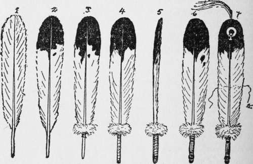

Warbonnet Or Headdress Its Meaning
Description
This section is from the book "The Book Of Woodcraft", by Ernest Thompson Seton. Also available from Amazon: The Book of Woodcraft.
Warbonnet Or Headdress Its Meaning
The typical Indian is always shown with a warbonnet, or warcap, of eagle feathers. Every one is familiar with the look of this headdress, but I find that few know its meaning or why the Indian glories in it so.
In the days when the Redman was unchanged by white men's ways, every feather in the brave's headdress was awarded to him by the Grand Council for some great deed, usually in warfare. Hence the expression, "a feather in his cap." These deeds are now called coups (pronounced coo), and when of exceptional valor they were grand coups, and the eagle's feather had a tuft of horsehair, or down, fastened on its top. Not only was each feather bestowed for some exploit, but there were also ways of marking the feathers so as to show the kind of deed.
Old plainsmen give an exciting picture in Indian life after the return of a successful war party. All assemble in the Grand Council lodge of the village. First the leader of the party stands up, holding in his hands or having near him the scalps or other trophies he has taken, and says in a loud voice:
" Great Chief and Council of my Nation, I claim a grand coup, because I went alone into the enemy's camp and learned about their plans, and when I came away I met one of them and killed him within his own camp".
Then if all the witnesses grunt and say: "Hu !" or "How! How!" ("So - it is so") the Council awards the warrior an eagle feather with a red tuft and a large red spot on the web, which tell why it was given.
The warrior goes on: "I claim grand coup because I slapped the enemy's face with my hand (thereby warning him and increasing the risk) before I killed him with my knife".
A loud chorus of "How! How! How!" from the others sustains him, and he is awarded another grand coup.
"I claim grand coup because I captured his horse while two of his friends were watching".
Here, perhaps, there are murmurs of dissent from the witnesses; another man claims that he also had a hand in it. There is a dispute and maybe both are awarded a coup, but neither gets grand coup. The feathers are marked with a horseshoe, but without a red tuft.
The killing of one enemy might (according to Mallery 4 Ann. Eth. p. 184) confer feathers on four different men - the first, second, and third to strike him, and the one who took his scalp.
After the chief each of the warriors comes forward in turn and claims, and is awarded, his due honors to be worn ever afterward on state occasions. All awards are made and all disputes settled by the Council, and no man would dream of being so foolish as to wear an honor that had not been conferred by them, or in any way to dispute their ruling.
In the light of this we see new interest attach to the headdress of some famous warrior of the West when he is shown with a circle of tufted feathers around his head, and then added to that a tail of one hundred or more reaching to the ground or trailing behind him. We know that, like the rows of medals on an old soldier's breast, they are the record of wonderful past achievements, that every one of them was won perhaps at the risk of his life. What wonder is it that travelers on the plains to-day tell us that the Indian values his headdress above all things else. He would usually prefer to part with his ponies and his teepee before he will give up that array of eagle plumes, the only tangible record that he has of whatever was heroic in his past.
Plenty Coups
I remember vividly a scene I once witnessed years ago in the West when my attention was strongly directed to the significance of the warbonnet. I was living among a certain tribe of Indians and one day they were subjected to a petty indignity by a well-meaning, ill-advised missionary. Two regiments of United States Cavalry were camped near, and so, being within the letter of the law, he also had power to enforce it. But this occurrence was the last of a long series of foolish small attacks on their harmless customs, and it roused the Indians, especially the younger ones, to the point of rebellion.
A Grand Council was called. A warrior got up and made a strong, logical appeal to their manhood-a tremendously stirring speech. He worked them all up and they were ready to go on the warpath, with him to lead them. I felt that my scalp was in serious danger, for an outburst seemed at hand.

Continue to:
Tags
bookdome.com, books, online, free, old, antique, new, read, browse, download